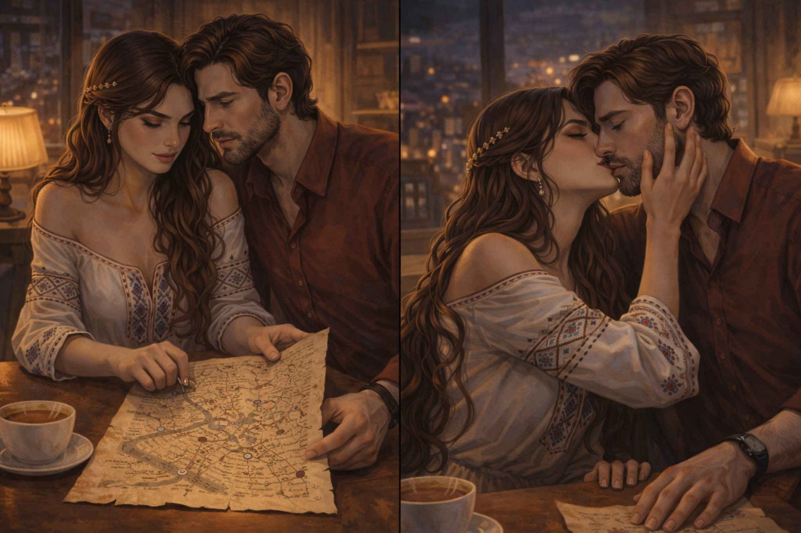

Поглавље 10: Мапа и страст
Página individual del capítulo con lectura y ejercicios.

Луис и Наташа седе у кафићу и разговарају о Софији. Луис пита: "Наташа, одakле познајеш Софију?"
Наташа одговара: "Познајемо се из школе. Понекад долази код мене у посету. Али је не познајем баш најбоље."
Луис кима, али Наташа изгледа љубоморно. "Луис, немој да се заљубиш у њу. Ти си мој, и само мој."
Луис осети језу. Наташина посесивност га чини нелагодним. "Наташа, ти си једина коју волим," каже он, покушавајући да је смири.
Наташа се осмехне и показује му још једну страницу коју је украла из рукописа. "Погледај ово," каже она. На страници је мапа Београда са пет означених тачака.
Луис гледа мапу. "Шта је ово?"
Наташа објашњава: "Ово је мапа Београда са пет кључних места. Можда су ту камења."
Луис пита: "Која су то места?"
Наташа показује на мапу: "Прво место је Калемегдан. Друго је Скадарлија. Треће је Храм Светог Саве. Четврто је Зедањ. И пето је Авала."
Луис гледа мапу. "Морамо да идемо на сва ова места."
Наташа кима, али одједном га страсно љуби. Луис је изненађен, али не одговара. Након тога, Наташа се смеје. "Извини, имам пуно страсти."
Луис се осмехне, али осећа нелагодност. "У реду је, Наташа. Али морамо да будемо озбиљни. Време је да кренемо."
Наташа кима. "Идемо. Прво на Калемегдан."
Они устају и крећу ка првом месту на мапи. Луис осећа да се нешто лоше спрема, али зна да мора да настави.